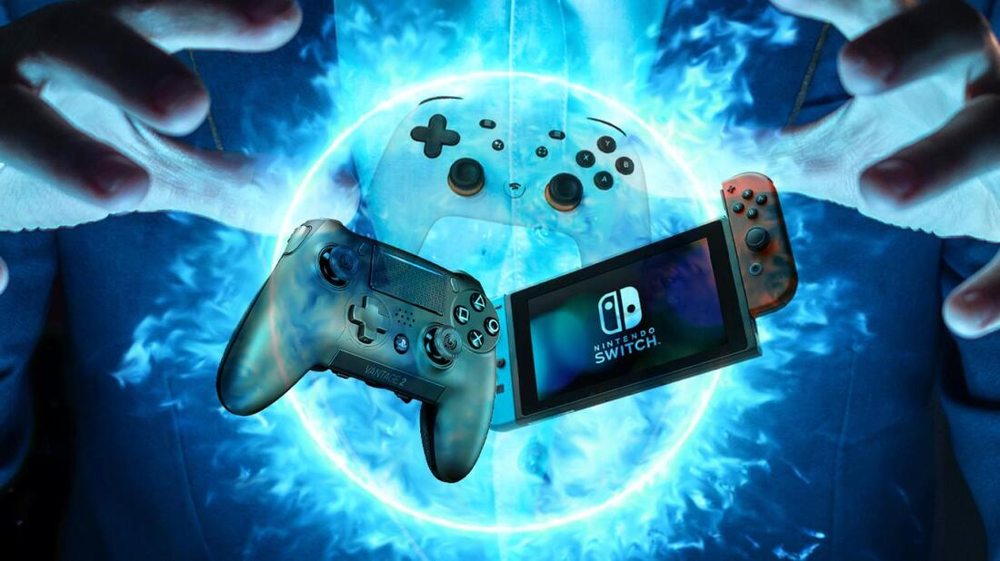
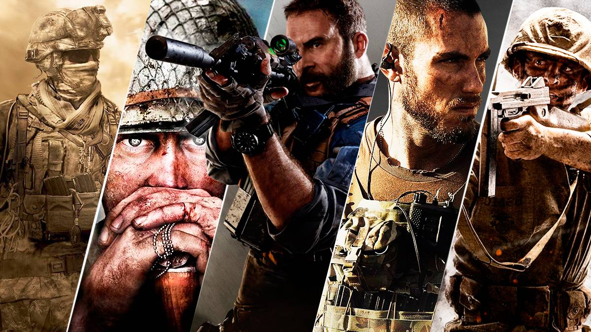
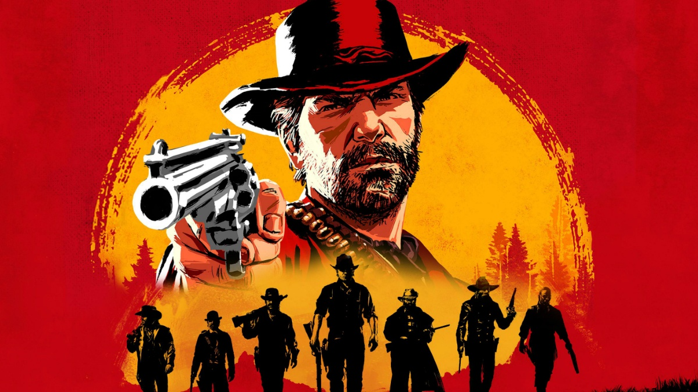
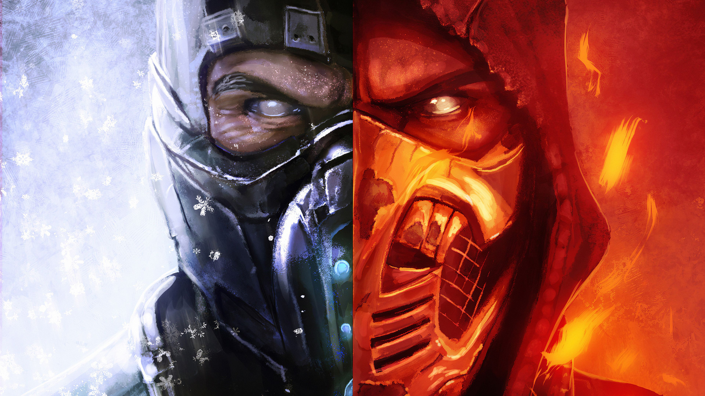
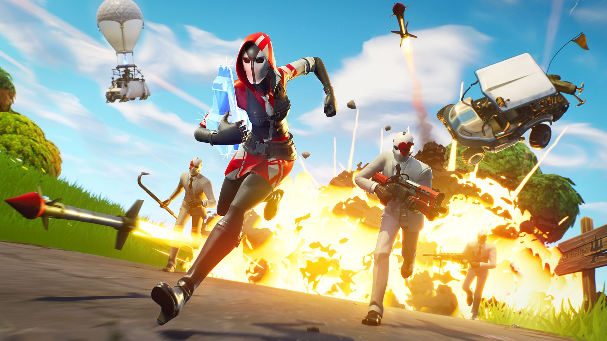
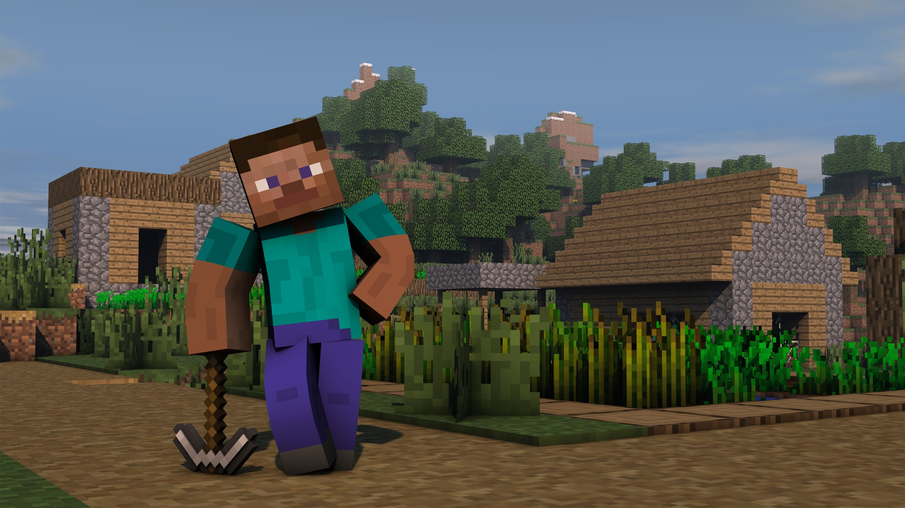

Videojuegos
Hecho por: Juan Pablo Velasquez Gonzales

- Introduccion
Un videojuego es una aplicación interactiva orientada al entretenimiento que, a través de ciertos mandos o controles, permite simular experiencias en la pantalla de un televisor, una computadora u otro dispositivo electrónico.
Los videojuegos se diferencian de otras formas de entretenimiento, en que deben ser interactivos; es decir, los usuarios deben involucrarse activamente con el contenido.
El concepto de videojuego se utiliza para referirse a cualquier juego digital interactivo, independientemente de su soporte físico.
Pueden ser muy distintos entre sí, tanto en complejidad como en calidad gráfica y en temática.
Es muy comun que muchos jovenes y niños jueguen videojuegos desde una consola, hasta en un celular. Ya que los videojuegos llega a divertir, hasta incluso a distraer de algun problema que alguna persona tenga en su vida personal.
Hoy, para mi examen, les hablare hacerca de algunos de estos videojuegos.
- Categorias
De forma generalizada, los videojuegos recrean entornos y situaciones virtuales en los que el videojugador puede controlar a uno o varios personajes (o cualquier otro elemento de dicho entorno), para conseguir uno o varios objetivos por medio de reglas determinadas. No obstante, el mundo de los juegos virtuales es tan extenso que antes de continuar es imprescindible establecer una clasificación de los videojuegos. Primero tendremos en cuenta la diferenciación entre videojuegos para niños y para adultos, posteriormente los clasificaremos por temática, y por último por tipo de videoconsola.
Por ejemplo, en lo que respecta al entorno familiar, muchos padres desconocen los tipos de juegos que existen y que sus hijos consumen. Algunos padres con hijos menores disponen de normas para el uso de videojuegos de sus hijos. Entre las medidas más utilizadas por los padres está la de controlar el tiempo de estar delante del ordenador, pero además es fundamental conocer y disponer de información sobre los tipos de videojuegos existentes para el público infantil.
Algunas de estas cateorias son:
• Arcade
• Educativos
• Terror
• Mundo abierto
• Shooter
• Creativos
A continuacion les hablare hacerca de algunos juegos basados en las categorias mencionadas anteriormente.
Call of Duty, es una serie de videojuegos de disparos en primera persona, de estilo bélico, desarrollada principal e inicialmente por Infinity Ward, Treyarch, Sledgehammer Games y en menor proporción Raven Software y distribuida por Activision. La franquicia comenzó para computadora personal y posteriormente fue expandiéndose hacia videoconsolas de sexta y séptima generación, tanto de sobremesa como portátiles, llegando así, a lanzar varios juegos derivados de forma paulatina con la serie principal. La serie inicialmente se ambientaba en la Segunda Guerra Mundial, relatando personajes y combates acaecidos durante dicho conflicto bélico. Esto fue cambiando hasta la actualidad, donde los argumentos suceden en ambientes contemporáneos y ficticios, como se puede ver en Call of Duty: Black Ops y Call of Duty: Black Ops Cold War, en la Guerra Fría, como se ve en Call of Duty: Modern Warfare, Call of Duty: Modern Warfare 2 y Call of Duty: Modern Warfare 3 en la Tercera Guerra Mundial, y en los futuros tecnológicos en Call of Duty: Black Ops 2, Call of Duty: Advanced Warfare, Call of Duty: Black Ops 3, Call of Duty: Infinite Warfare y Call of Duty: Black Ops 4. Desde Call of Duty 4: Modern Warfare hasta Call of Duty: Advanced Warfare los DLCs de las distintas entregas se lanzaban con unos meses de adelanto en las plataformas Xbox 360 y Xbox One. Desde Black Ops 3 hasta Black Ops 4 comenzaron a lanzarse primero en PlayStation 4. Finalmente a partir del reinicio de 2019 de Modern Warfare, los DLCs comenzaron a lanzarse de forma gratuita al mismo tiempo en todas las plataformas con las consolas PlayStation 4 y PlayStation 5 recibiendo otros beneficios exclusivos como modos o eventos de experiencia. La saga ha gozado de un gran éxito comercial y crítico, el cual ha durado hasta la actualidad.

Para saber mas hacerca de Call of Duty haz click en el nombre del juego.
Red Dead Redemption es un videojuego no lineal de acción-aventura wéstern desarrollado por Rockstar San Diego. El videojuego fue anunciado oficialmente el 4 de febrero de 2009, y se lanzó el 18 de mayo de 2010 en Norteamérica y el 21 de mayo en Europa y Australia para Xbox 360 y PlayStation 3. Es considerado el sucesor espiritual de Red Dead Revolver, lanzado en 2004.
La historia de Red Dead Redemption transcurre en los últimos años del lejano oeste estadounidense, en 1911, y narra la historia del antiguo bandido John Marston, que es chantajeado por los agentes federales que tienen amenazada a su familia para que ayude a imponer la ley en la frontera mexicano-estadounidense y capture a su antiguo compañero, y actual bandido, Bill Williamson. La acción del videojuego se sitúa en los estados ficticios de New Austin, Nuevo Paraíso y West Elizabeth.
Desde su lanzamiento, Red Dead Redemption ha disfrutado del aplauso unánime de la crítica, pues cuenta con una puntuación de 95/100 en los recopiladores de análisis Metacritic y GameRankings. Rockstar Games ha lanzado cinco contenidos descargables para el videojuego: Mitos y Renegados, Forajidos hasta el final, Leyendas y Asesinos, Mentirosos y Tramposos, Cazador y Mercader y Pesadilla de los No Muertos. En octubre de 2010 se hizo público que cuatro de esas expansiones se recopilarían en un solo disco: su lanzamiento se produjo el día 26 de noviembre de 2010. El videojuego ha vendido más de once millones de unidades en las plataformas PlayStation 3 y Xbox 360 desde que fuese lanzado al mercado. El 8 de julio de 2016 las ventas aumentaron debido a que el título llegó a Xbox One gracias a la retrocompatibilidad con Xbox 360.

Para saber mas hacerca de Red Dead Redemption haz click en el nombre del juego.
Mortal Kombat (comúnmente abreviado MK) es una franquicia de videojuegos de lucha creada por Ed Boon y John Tobias en 1992. Las cuatro primeras entregas fueron distribuidas por Midway Games y lanzadas principalmente en máquinas arcade; posteriormente estuvieron disponibles en consolas domésticas.
Los títulos de arcade fueron comprados más tarde por Acclaim Entertainment para las consolas caseras de esa época. La franquicia fue adquirida por Warner Bros en julio de 2009 y se convirtió en una parte de la Warner Bros. Interactive Entertainment. El título más reciente, Mortal Kombat 11, fue publicado en abril de 2019
Como resultado de su éxito, Mortal Kombat ha dado lugar a varias secuelas y se ha escindido en varios juegos de acción y aventura, ha tenido películas, series de televisión e historietas. La serie es conocida por su violencia gráfica, incluyendo particularmente los fatalities, un movimiento especial que para ser realizado se requiere hacer una combinación específica de botones, que posteriormente llevó a las empresas de videojuegos a crear la ESRB.

Para saber mas hacerca de Mortal Kombat haz click en el nombre del juego.
Fortnite es un videojuego del año 2017 desarrollado por la empresa Epic Games, lanzado como diferentes paquetes de software que presentan diferentes modos de juego, pero que comparten el mismo motor de juego y mecánicas. Fue anunciado en los Spike Video Game Awards en 2011.
Los modos de juego publicados en 2017 incluyen Fortnite Battle Royale, un juego gratuito donde hasta cien jugadores luchan en una isla, en espacios cada vez más pequeños debido a la tormenta, para ser la última persona o equipo en pie, y Fortnite: Salvar el mundo, un juego cooperativo de hasta cuatro jugadores que consiste en luchar contra carcasas, criaturas parecidas a zombis, utilizando objetos, mejoras y fortificaciones.
Ambos modos de juego se lanzaron en 2017 como títulos de acceso anticipado. Salvar el Mundo está disponible solo para Windows, macOS, PlayStation 4 y Xbox One, mientras que Battle Royale ha sido publicado también para Nintendo Switch, dispositivos iOS y Android, así como en PlayStation 5 y Xbox Series X|S. En agosto de 2020, el juego fue retirado de la tiendas App Store y Play Store por infringir sus normas, aunque sigue disponible en la tienda Epic Games Store así como en la Galaxy Store.

Para saber mas hacerca de Fortnite haz click en el nombre del juego.
Minecraft es un videojuego de construcción de tipo «mundo abierto» o sandbox creado originalmente por el sueco Markus Persson (conocido comúnmente como «Notch»), y posteriormente desarrollado por Mojang Studios (actualmente parte de Microsoft). Fue lanzado el 17 de mayo de 2009, y después de numerosos cambios, su primera versión estable «1.0» fue publicada el 18 de noviembre de 2011.
Un mes antes del lanzamiento de su versión completa se estrenó una versión para dispositivos móviles llamada Minecraft: Pocket Edition en Android, y el 17 de noviembre del mismo año fue lanzada la misma versión para iOS. El 9 de mayo de 2012 fue lanzada la versión del juego para Xbox 360 y PS3. Todas las versiones de Minecraft reciben actualizaciones constantes desde su lanzamiento. En octubre de 2014, Minecraft lanzó su edición para PlayStation Vita, desarrollada por Mojang y 4J Studios. Esta versión presenta las mismas actualizaciones y similares características que las otras versiones de consola; además, cuenta con el sistema de venta cruzada, es decir que al comprar la versión de PlayStation 3 se obtiene también la de PlayStation Vita. A septiembre de 2014 se habían vendido más de 54 millones de copias.
El 15 de septiembre de 2014, fue adquirido por la empresa Microsoft por un valor de 2500 millones de dólares estadounidenses. Este suceso provocó el alejamiento de Markus Persson de la compañía. En noviembre de 2016, Microsoft anunció el lanzamiento de la versión completa de Minecraft: Education Edition.

Para saber mas hacerca de Minecraft haz click en el nombre del juego.
Muchas gracias por ver mi primer desarrollo de pagina web :)!!!